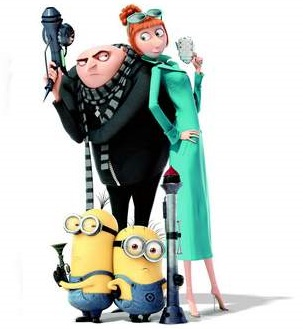

Аз, проклетникът
. . . . готови ли сте?
Бившият суперзлодей Гру, който се е оттеглил от престъпния живот, за да отглежда трите си дъщери, се завръща в тази касова анимационна комедия, създадена от Illumination Entertainment. Нещата поемат в неочаквана посока, когато той е вербуван от Антизлодейската лига, за да залови ловък престъпник, който заплашва света. С помощта на новата си приятелка Уайлд, Гру и мъничетата се отправят на едно непредсказуемо и неочаквано приключение.
Озвучен на български от: Стоян Алексиев, Гергана Стоянова, Кристина Тодорова, Ирена Велчева, Малена Шишкова, Кирякос Аргиропулос, Николай Пърлев, Елена Бойчева, Георги Спасов, Владимир Зомбори, Албена Михова, Добрин Векилов и др.
Аз, проклетникът“ (на английски: Despicable Me) е американски пълнометражен анимационен филм от 2010 г. Режисиран е от Пиер Кофен и Крис Рено и продуциран от Джон Коен и Джанет Хийли. Филмът е със участието на Дани Макбрайд, Стийв Карел, Джейсън Сигъл, Джули Андрюс, Кен Джонг и др. Озвучен е на български език с гласовете на актьорите Стоян Алексиев, Кирил Бояджиев, Мариета Петрова, Георги Спасов, Цветослава Симеонова, Ирена Велчева, Кристина Тодорова, Анна-Мария Върбани, Петър Върбанов и др. Премиерата му е на 9 юли 2010 г. в САЩ, а в България е на 1 октомври 2010 г. „Аз, проклетникът“ печели предимно положителни отзиви от критиката, както и номинации за награди като BAFTA, Златен глобус и др.
В "Аз, проклетникът 2" Гру е оставил карерата си на супер престъпник и се е посветил на отглеждането на Марго, Едит и Агнес. Сега той, д-р Нефарио и жълтите слуги разполагат със свободно време, което трябва да запълнят. Едва свикнал с ролята си на семеен човек от предградията, натоварен с нелеката задача да се грижи за три малки момиченца, Гру се сблъсква с хипер секретна организация, която се бори със злото по света. В неговите и ръцете на новата му партньорка Луси Уайлд е отговорността да се разкрие кой стои зад едно от най-големите престъпление и злодеят да бъде наказан. В крайна сметка именно бившият най-голям злодей е изправен пред предизвикателството да залови своя замес
източник : Onlain-filmi